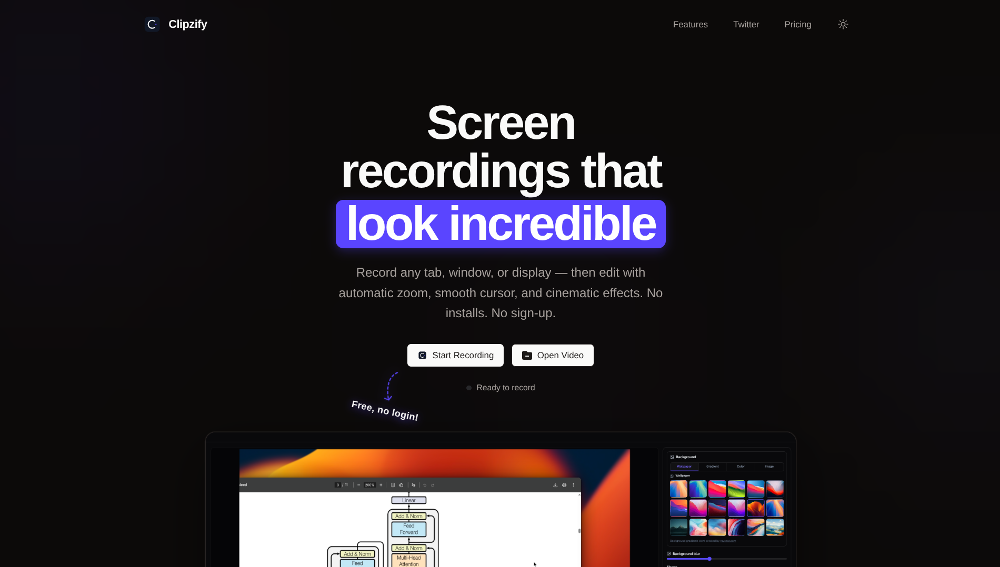

Utkarsh
20-year-old web developer from India 🇮🇳. Building real-world tools with code, curiosity, and caffeine.
Dev Philosophy
I like building things from scratch, breaking them, and understanding how they actually work under the hood, not just using libraries blindly.
Technical Toolkit
Fundamentals:
DSA Python Java C/C++ SQLWeb & Tools:
HTML/CSS Javascript FastAPI REST API Docker GitData & ML:
TensorFlow Scikit Learn MongoDB Numpy Pandas MatplotlibFeatured Projects

Browser-based SaaS
Clipzify
A fully browser-based screen recorder that transforms raw recordings into polished videos automatically — featuring smart auto zoom, smooth cursor tracking, and cinematic effects. No installation needed.
GitHub Activity
* My daily scribbles in the digital world.